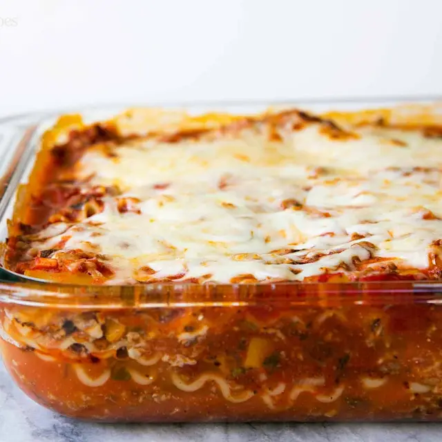

Lasagna

Descriptions
This classic lasagna is made with an easy meat sauce as the base. Layer the sauce with noodles and cheese, then bake until bubbly! This is great for feeding a big family, and freezes well, too.
Ingredients
- olive oil
- 454 grams lean ground beef (chuck)
- 1/2 onion (diced, about 3/4 cup)
- 1/2 bell pepper (large, green, red, or yellow, stem and core removed, diced, about 3/4 cup)
- 2 cloves garlic (minced)
- 0.73 liters tomato sauce (good quality)
- 85 grams tomato paste (half a 6-oz can)
- 397 grams crushed tomatoes
- 2 tablespoons fresh oregano (chopped, or 2 teaspoons dried oregano)
- 15 grams fresh parsley (chopped, preferably flat leaf, packed)
- 1 tablespoon italian seasoning
- 1 pinch garlic powder (and/or garlic salt)
- 1 tablespoon white wine vinegar (or red)
- 50 grams sugar (to taste, optional)
- salt
- 227 grams lasagna noodles (requires 9 lasagna noodles - unbroken)
- 425 grams ricotta cheese
- 0.68 kilograms mozzarella cheese (grated or sliced)
- 113 grams grated Parmesan cheese (freshly)
Directions
- Start by making the sauce with ground beef, bell peppers, onions, and a combo of tomato sauce, tomato paste, and crushed tomatoes. The three kinds of tomatoes gives the sauce great depth of flavor.
- Let this simmer while you boil the noodles and get the cheeses ready. We're using ricotta, shredded mozzarella, and parmesan -- like the mix of tomatoes, this 3-cheese blend gives the lasagna great flavor!
- From there, it's just an assembly job. A cup of meat sauce, a layer of noodles, more sauce, followed by a layer of cheese. Repeat until you have three layers and have used up all the ingredients.
- Bake until bubbly and you're ready to eat!
Home